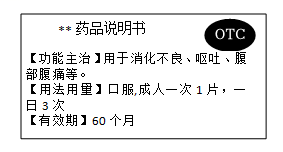
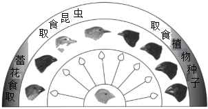

2024年北京市西城区中考生物真题 · 选择题 第21、22、23、24、25题
21. 为选育再生稻新品种，我国航天员将再生稻种子带入太空。该育种方式是希望通过射线和微重力等因素的作用，从根本上改变再生稻（ ）
A. 种子的形态结构B. 种子的遗传物质
C. 细胞的营养物质D. 细胞的分裂方式
22. 水痘是由水痘--带状疱疹病毒引起的，可通过注射水痘疫苗进行预防。下列相关叙述错误的是
A. 该病毒是引发水痘的病原体B. 水痘疫苗起到抗原的作用
C. 水痘疫苗刺激机体产生抗体D. 该过程属于非特异性免疫
23. 秋冬季节易发生流行性感冒，下列预防措施不合理的是（ ）
A. 始终紧闭门窗可以保护易感人群B. 佩戴口罩可以切断传播途径
C. 尽量避免聚集可以减少感染机会D. 锻炼身体可以提高抗病能力
24. 某药品说明书内容节选如下图，关于该药物的叙述正确的是（ ）

A. 需凭医生开具的处方才能购买B. 适用于消化不良患者的治疗
C. 病症严重时应加倍服用D. 超过有效期仍然可以服用
25. 加拉帕戈斯群岛的不同小岛上生活的地雀种类存在差异。地雀喙型的进化过程如图。下列相关叙述错误的是

A. 多种地雀具有共同的祖先B. 地雀祖先存在喙型不同的变异
C. 喙型的进化与食物种类无关D. 喙型的进化是自然选择的结果